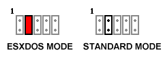

V6Z80P Basic User Manual 06-03-2013
(Online documentation & link to main project archive: http://wiki.retroleum.co.uk)
=========================================================================================
As supplied, the V6Z80P system comprises three basic elements:
1. The PCB itself, this is the actual "V6Z80P".
2. A default architectural design for the FPGA called OSCA (Old School
Computer Architecture) which is stored on an EEPROM. (There are currrently
three additional FPGA architectures supplied on the EEPROM providing Spectrum 48,
Spectrum 128 and Pentagon 128 cycle-pefect emulation. These were made by
Alessandro Dorigatti.)
3. A simple command line operating system for OSCA called FLOS (Freezer-Like
Operating System) also stored on the EERPOM but will load from SD card in
preference if inserted.
The cables supplied for SCART TV connection, RS232 (serial) comms and Spectrum
EAR interface (where requested) are custom designed for the V6Z80P - the wiring
diagrams can be found elsewhere in the documentation folders.
The V6Z80P PCB - A Brief Description:
The board is a 2-layer PCB, comprising mainly of a 20MHz CMOS Z80 CPU, Spartan2
XC2S150 FPGA and 3 SRAM chips (two 512KB and one 128KB) . There are two oscillators
present, 16MHz used for OSCA and 14MHz used for the Spectrum emulators. The video
DAC offers 12bit colour output via a standard VGA socket (the custom SCART cable
allows TV connection using RGB mode.) Stereo sound is output via a standard 3.5mm
Line Out jack socket. There are connectors for PC standard PS/2 keyboard and mouse,
Atari 2600-standard joysticks, RS232 serial and SD card IO.
The V6Z80P should be powered from a regulated 7.5 to 9.0 Volt DC mains adapter
with a 2.1mm jack (centre positive) capable of supplying about 800 mA (or more).
For full details, see the V6Z80P PCB manual
An Outline of the OSCA Architecture:
OSCA's video system offers bitplane, byte map and tilemap style displays with data
sourced from a dedicated 512KB SRAM. Each mode allows hardware scrolling and a
256 colour palette. Other features include linedraw hardware, blitter data copier
and a scanline-synced co-processor for split screen effects. Up to 55 hardware sprites
per scanline can be displayed (each is 16 pixels wide, up to 240 lines high with
256 colours). A 128KB RAM chip is dedicated to sprite definitions.
There are four audio channels each capable of playing 8-bit signed sample data
via DMA (in a similar fashion to the Amiga).
OSCA also contains interface hardware for a PS/2 keyboard and mouse, SD card and
joysticks as well as memory paging registers etc accessed through Z80 ports.
For full details of OSCA, see the OSCA Hardware Manual
Brief description of the "FLOS" Operating System
FLOS is a simple command line operating system / memory monitor similar to those
used by freezer cartridges for the 1980s home computers. In some ways it behaves
like a more modern DOS in that disk-based programs can be executed simply by entering
their filenames. The usual commands are present (show memory as hex, disassemble,
load and save bytes to RAM etc).
FLOS uses the FAT16 file system and loads from a file on the root of the SD card
(or from the onboard EEPROM). Naturally, it can be replaced with any arbitrary code
that is required to load at boot up.
For detailed info see the FLOS manual.
Powering Up:
Download the full project archive (to PC) then format an SD card to FAT16 (please
use a good brand to ensure compatibility). Copy the contents of the folder "V6_SD_Card"
from the project archive to the card and insert into the V6Z80P's card slot.
Connect the power jack to the DC socket, a PS/2 keyboard and video/audio cables. If using a
VGA monitor, make sure the VGA-mode jumper (on the right side of 10 pin header) is installed.
The JTAG mode jumpers (J1 and J2) should be uninstalled for normal start-up. You can
now flick the power switch near the DC jack across to the right and the V6Z80P should
power up. The status LED lights up, a black and white bootloader screen appears, after
which FLOS loads. Once loaded, you can type "?" <return> for a list of internal commands
(for details use the command "HELP (command_name)" or see the FLOS manual.
Z80 programs with .flx or .exe filename extensions can be run from the SD card (use the
command line to navigate in a similar manner to DOS). Most of the demos etc can
be quit by pressing the ESC key (note: some programs were coded specifically
for the PAL TV system so may not work properly on VGA or in 60Hz NTSC display modes).
The system can also run without an SD card as FLOS is installed by default on
the EEPROM. However, this limits its use since everything but the internal commands
must be loaded into memory via Serial Link.
To send and receive data to FLOS, use the "Serial_link" utility provided on the PC
(see the "PC_based_apps" folder in project archive) and use the custom DSUB9 to
4 pin mini-DIN serial cable provided. The FLOS commands RX (receive to memory),
TX (transmit from memory) and FRX (receive file and save to SD card), FTX (transmit
file from SD card) are used for FLOS command line file transfer. For details see
the Serial Comms Manual.
FPGA Configs:
The onboard EEPROM can store multiple FPGA configurations in what (for simplicity)
are called "slots". On power-up, the FPGA starts from whichever is set to the
"Power-on Boot Slot". As supplied, OSCA for 50Hz PAL TVs in Slot 1 and OSCA for
60Hz NTSC TVs is in Slot 2 (the default boot slot will depend on the locale the
board was dispatched to.)
V6Z80P+ v1.1 boards come with Alessandro Dorigatti's Spectrum emulators
(Slot 3: Spectrum 48 Slot 4: Spectrum 128, Slot 5: Pentagon 128). These configs
must be launched with the FLOS command EMU (as they need to preload data such
as the Spectrum ROM). Each of the emulators can support a virtual divMMC interface
and esxDOS Operating System - this is enabled with a jumper in the V6Z80P header group:
When the jumper is on, the emulators use esxDOS mode. Note that OSCA's NMI jumper is
not used for the Spectrum emulators, the NMI feature (EG: go to file browser in esxDOS)
is mapped to the SCROLL_LOCK key. Please see the folder Alternative_Configs/Alessandro/
for full details on the Spectrum emulators.

All the configs supplied support VGA output using the rightmost jumper as
shown earlier.
How to install new FPGA configs:
In FLOS, enter the command "EEPROM" (no quotes)
1. Choose Option 1 "Write config to slot".
2. When asked which slot, choose a slot showing "UNKNOWN" or a slot other than
the power-on boot slot.
3. Browse to the config's .bin or .v6c file (or choose "RS232" in the requester to use
the serial download option)
4. Wait for file to load, write to the EEPROM and complete verification.
If the config is a bootable, standalone atchitecture (EG: a new version of OSCA) you
should now test it by choosing Option 2 - "Reconfigure from a slot now (Non-permanent)"
and enter the slot number you used in step 2.
The FPGA will restart using the new config - this selection persists until cold reset.
If everything is OK, you can reload the EEPROM tool and choose option 3 to make the new
config the Power-On Boot Slot.
If the system does not start from power up and the power LED flashes at a rate of about
1 pulse per second, the FPGA is not receiving a valid config file. To remedy this,
see the troubleshooting manual.
Other Jumper Pins:
Four other pins in the header group are used by OSCA / FLOS for Warm Reset and NMI (program
freezer). Button switches should be connected to these pin headers if these functions
are required. Note that the reset input here only resets the CPU and some of OSCA's
registers, it does not reconfigure the FPGA (see the info regarding jumper J2 for a
method to do that).

Jumpers J1 and J2:
These jumpers are mainly needed when configuring the FPGA from a JTAG cable
(EG: when testing new configurations). To enter JTAG config mode, with the power off,
install both jumpers and power on - the status LED flashes rapidly signifying that a
JTAG config should be sent to the board.
J2 also has additional functions: If a button is placed across J2 (and firmware 6.37
or above is installed in the config PIC) it can be used as a Cold Reset. IE: When the
button is pressed, the FPGA will reconfigure from whichever is the power-on boot slot
(this in turn causes a CPU reset). This is useful for escaping from the Spectrum emulators
without powering off/on.
J2 can also be used to manually set the power-on boot config slot (which is useful if an
incorrect slot has been set via software). See the troubleshooting guide for details.
The Boot Procedure:
When the power is switched on, a PIC microcontroller first checks for JTAG config mode
(J2 installed). If J2 is not shorted, the microcontroller clocks config data from the
selected power-on boot slot in the EEPROM into the FPGA. The FPGA configures and resets
the Z80, which then runs a small 512 byte ROM held within the FPGA. This ROM code loads
a bootloader from the EEPROM, which runs and loads the OS. (The OS can load from SD card,
EEPROM or via Serial Link - in that order of priority).
If the ROM cannot load a valid bootcode file from the EEPROM, the display will flash
magenta (bad CRC) or green (time out). If OSCA version 661 or above is installed it
is possible to send the bootcode file manually via the serial link when the display
turns grey. It is also possible to force serial transfer of the bootcode on power up
by holding UP+RIGHT+FIRE on a joystick in port A. (Note: The baud rate must be 115200).
On the bootloader screen, the following keys are active:
ESC - Cancel the boot process and wait for an OS to be downloaded via serial link
Whilst waiting, you can press F11 and F12 set the BAUD rate (default is 115200)
or press Left CTRL to reboot.
F1-F7 - Reconfigure the FPGA from an EEPROM slot (note: you cannot start
Alessandro's Spectrum emulators in this way - you must use the FLOS
command EMU for to start these).
==================================================================================================
Further Reading:
FLOS manual - In depth FLOS user manual
OSCA manual - Full OSCA hardware description / register list
PCB tech manual - Detail about the physical PCB.
Serial Comms manual - More info concerning RS232 comms
ROM and Bootcode manual - In depth info about the start up procedure.
Troubleshooting Guide - Tips and solutions to common problems
==================================================================================================